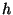

NWChem currently supports basis sets consisting of generally
contracted7.1 Cartesian Gaussian functions up to a maximum angular
momentum of six ( functions), and also  (or L)
functions7.2 . The BASIS directive is used to
define these, and also to specify use of an effective core potential
(ECP) that is associated with a basis set; see Section 8.
(or L)
functions7.2 . The BASIS directive is used to
define these, and also to specify use of an effective core potential
(ECP) that is associated with a basis set; see Section 8.
The basis functions to be used for a given calculation can be drawn from a standard set in the EMSL basis set library that is included in the release of NWChem (See Appendix A for a list of the standard basis sets currently supplied with the release of the code). Alternatively, the user can specify particular functions explicitly in the input, to define a particular basis set.
The general form of the BASIS directive is as follows:
BASIS [<string name default "ao basis">] \
[(spherical || cartesian) default cartesian] \
[(segment || nosegment) default segment] \
[(print || noprint) default print]
[rel]
<string tag> library [<string tag_in_lib>] \
<string standard_set> [file <filename>] \
[except <string tag list>] [rel]
...
<string tag> <string shell_type> [rel]
<real exponent> <real list_of_coefficients>
...
END
Examining the keywords on the first line of the BASIS directive:
By default, the basis set is stored in the database with the name
"ao basis". Another name may be specified in the BASIS
directive, thus, multiple basis sets may be stored simultaneously in the
database. Also, the DFT (Section 11)
and RI-MP2 (Section 16) modules and the
Dyall-modified-Dirac relativistic method (Section 9.2)
require multiple basis sets with specific names.
The user can associate the "ao basis" with another named basis
using the SET directive (see Section 5.7).
The keywords spherical and cartesian offer the option of
using either spherical-harmonic (5 d, 7 f, 9 g, ...) or Cartesian
(6 d, 10 f, 15 g, ...) angular functions. The default is
Cartesian.
Note that the correlation-consistent basis sets were designed using
spherical harmonics and to use these, the spherical keyword
should be present in the BASIS directive. The use of spherical
functions also helps eliminate problems with linear dependence.
By default, NWChem forces all basis sets to be segmented,
even if they are input with general contractions or  or sp
shells. This is because the current derivative integral program cannot
handle general contractions. If a calculation is
computing energies only, a
performance gain can result from exploiting generally contracted basis
sets, in which case NOSEGMENT should be specified.
or sp
shells. This is because the current derivative integral program cannot
handle general contractions. If a calculation is
computing energies only, a
performance gain can result from exploiting generally contracted basis
sets, in which case NOSEGMENT should be specified.
The default is for the input module to print all basis sets encountered.
Specifying the keyword noprint allows the user to suppress this output.
This keyword marks the entire basis as a relativistic basis for the purposes of the Dyall-modified-Dirac relativistic integral code. The marking of the basis set is necessary for the code to make the proper association between the relativistic shells in the ao basis and the shells in the large and/or small component basis. This is only necessary for basis sets which are to be used as the ao basis. The user is referred to Section 9.2 for more details.
Basis sets are associated with centers by using the tag of a center in
a geometry that has either been input by the user (Section
6) or is available elsewhere. Each atom or center with
the same tag will have the same basis set. All atoms must have
basis functions assigned to them -- only dummy centers (X or Bq) may have no
basis functions. To facilitate the specification of the geometry and
the basis set for any chemical system, the matching process of a basis
set tag to a geometry tag first looks for an exact match. If no match
is found, NWChem will attempt to match, ignoring case, the name or
symbol of the element. E.g., all hydrogen atoms in a system could be
labeled ``H1'', ``H2'', ..., in the geometry but only
one basis set specification for ``H'' or ``hydrogen'' is necessary.
If desired, a special basis may be added to one or more centers (e.g.,
``H1'') by providing a basis for that tag.
If the matching mechanism fails then NWChem stops with an appropriate
error message.
A special set of tags, ``*'' and tags ending with a ``*'' (E.g. ``H*'')
can be used in combination with the keyword library (see section
below). These tags facilitate the definition of a certain type of basis
set of all atoms, or a group of atoms, in a geometry using only a single
or very few basis set entries. The ``*'' tag will not place basis sets
on dummy atoms, Bq* can be used for that if necessary.
Examined next is how to reference standard basis sets in the basis set library, and finally, how to define a basis set using exponents and coefficients.
The keyword library associated with each specific tag
entry specifies that the calculation will use the standard basis set
in NWChem for that center. The variable <standard_set> is the
name that identifies the functions in the library. The names of
standard basis sets are not case sensitive. See Appendix
A for a complete list of the basis sets in the
NWChem library and their specifications.
The general form of the input line requesting basis sets from the NWChem basis set library is:
<string tag> library [<string tag_in_lib>] \
<string standard set> [file < filename> \
[except <string tag list>] [rel]
...
For example, the NWChem basis set library contains the Dunning cc-pvdz basis set. These may be used as follows
basis
oxygen library cc-pvdz
hydrogen library cc-pvdz
end
A default path of the NWChem basis set libraries is provided on installation
of the code, but a different path can be defined by specifying the keyword
file, and one can explicitly name the file to be accessed
for the basis functions. For example,
basis
o library 3-21g file /usr/d3g681/nwchem/library
si library 6-31g file /usr/d3g681/nwchem/libraries/
end
This directive tells the code to use the basis set 3-21g in
the file /usr/d3g681/nwchem/library for atom o and
to use the basis set 6-31g in the directory
/usr/d3g681/nwchem/libraries/ for atom si, rather
than look for them in the default libraries. When a directory is defined
the code will search for the basis set in a file with the name 6-31g.
The ``*'' tag can be used to efficiently define basis set input directives for large numbers of atoms. An example is:
basis
* library 3-21g
end
This directive tells the code to assign the basis sets 3-21g to
all the atom tags defined in the geometry. If one wants to place a
different basis set on one of the atoms defined in the geometry, the
following directive can be used:
basis
* library 3-21g except H
end
This directive tells the code to assign the basis sets 3-21g to
all the atoms in the geometry, except the hydrogen atoms. Remember that
the user will have to explicitly define the hydrogen basis set in this
directive! One may also define tags that end with a ``*'':
basis
oxy* library 3-21g
end
This directive tells the code to assign the basis sets 3-21g to
all atom tags in the geometry that start with ``oxy''.
If standard basis sets are to be placed upon a dummy center, the
variable <tag_in_lib> must also be entered on this line, to
identify the correct atom type to use from the basis function library
(see the ghost atom example in Section 5.7 and below). For
example: To specify the cc-pvdz basis for a calculation on the water
monomer in the dimer basis, where the dummy oxygen and dummy hydrogen
centers have been identified as bqo and bqh
respectively, the BASIS directive is as follows:
basis
o library cc-pvdz
h library cc-pvdz
bqo library o cc-pvdz
bqh library h cc-pvdz
end
A special dummy center tag is bq*, which will assign the same basis
set to all bq centers in the geometry. Just as with the ``*'' tag, the
except list can be used to assign basis sets to unique dummy centers.
The library basis sets can also be marked as relativistic by adding the
rel keyword to the tag line. See Section 9.2 for
more details. The correlation consistent basis sets have been contracted for
relativistic effects and are included in the standard library.
There are also contractions in the standard library for both a point nucleus and a finite nucleus of Gaussian shape. These are usually distinguished by the suffixex _pt and _fi. It is the user's responsibility to ensure that the contraction matches the nuclear type specified in the geometry object. The specification of a finite nucleus basis set does NOT automatically set the nuclear type for that atom to be finite. See Section 6 for information.
If the basis sets in the library or available in other external files are not suitable for a given calculation, the basis set may be explicitly defined. A generally contracted Gaussian basis function is associated with a center using an input line of the following form:
<string tag> <string shell_type> [rel]
<real exponent> <real list_of_coefficients>
...
The variable <shell_type> identifies the angular momentum of the
shell,  ,
,  ,
,  , .... NWChem is configured to handle up to
shells. The keyword
, .... NWChem is configured to handle up to
shells. The keyword rel marks the shell as relativistic -- see
Section 9.2 for more details. Subsequent lines define
the primitive function exponents and contraction coefficients. General
contractions are specified by including multiple columns of coefficients.
The following example defines basis sets for the water molecule:
basis spherical nosegment
oxygen s
11720.0000 0.000710 -0.000160
1759.0000 0.005470 -0.001263
400.8000 0.027837 -0.006267
113.7000 0.104800 -0.025716
37.0300 0.283062 -0.070924
13.2700 0.448719 -0.165411
5.0250 0.270952 -0.116955
1.0130 0.015458 0.557368
0.3023 -0.002585 0.572759
oxygen s
0.3023 1.000000
oxygen p
17.7000 0.043018
3.8540 0.228913
1.0460 0.508728
0.2753 0.460531
oxygen p
0.2753 1.000000
oxygen d
1.1850 1.000000
hydrogen s
13.0100 0.019685
1.9620 0.137977
0.4446 0.478148
0.1220 0.501240
hydrogen s
0.1220 1.000000
hydrogen p
0.7270 1.000000
oxygen s
0.01 1.0
hydrogen s
0.02974 1.0
hydrogen p
0.141 1.0
end
For example, the following BASIS directive augments the Dunning
cc-pvdz basis set for the water molecule with a diffuse s-shell on
oxygen and adds the aug-cc-pVDZ diffuse functions onto the hydrogen.
basis spherical nosegment
oxygen library cc-pvdz
hydrogen library cc-pvdz
oxygen s
0.01 1.0
hydrogen library "aug-cc-pVDZ Diffuse"
end
The resulting basis set defined is identical to the one defined above in the explicit basis set input.